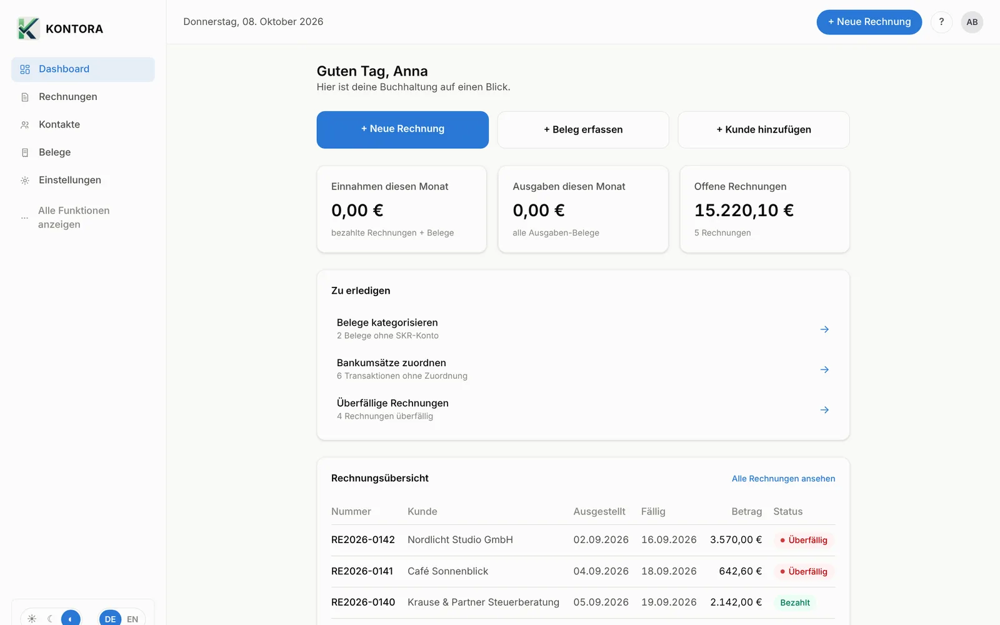
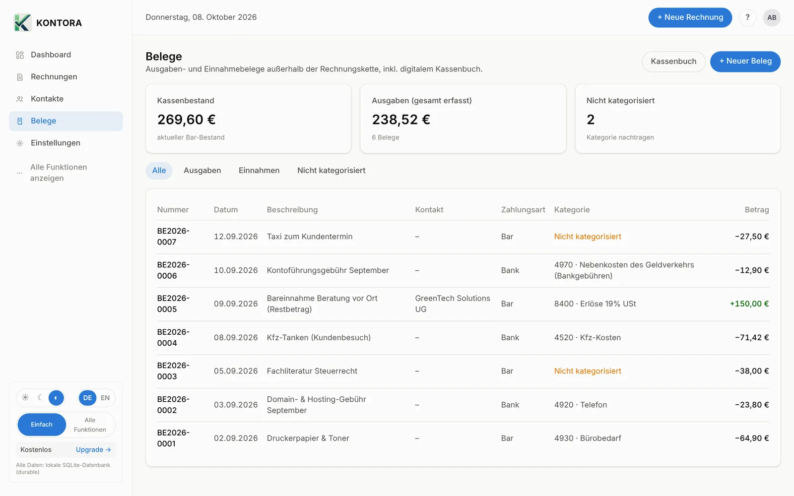

Rechnung schreiben. Beleg ablegen. Fertig.
Kontora ist die Buchhaltung für Selbstständige und kleine Firmen – mit E-Rechnung, Belegen per Handy, Bankabgleich, EÜR und DATEV-Export. Ihre Daten bleiben auf Ihrem eigenen PC.

Funktionen
Alles, was die laufende Buchhaltung braucht.
Vom Angebot bis zum Export an die Steuerberatung – ohne Abo-Zwang und ohne Cloud.
Im Alltag
Belege fotografieren statt Schuhkarton.
Ein Foto mit dem Handy genügt: Kontora schneidet den Beleg zu, liest die wichtigsten Angaben und legt ihn beim passenden Konto ab.
- Belege per Handy oder per E-Mail weiterleiten
- Vorschläge für Konto und Steuersatz
- Bankumsätze automatisch mit Rechnungen abgleichen
- Alles bereit für EÜR, Umsatzsteuer und DATEV


Ihre Daten
Ihre Buchhaltung gehört auf Ihren Rechner.
Kontora speichert alles in einer Datei auf Ihrem PC. Wir haben keinen Zugriff darauf.
- Funktioniert offline – Internet nur für den Pro-Kauf
- Tägliche automatische Sicherung, z. B. auf OneDrive oder USB-Stick
- Jede Änderung wird mit dem vorherigen Stand protokolliert
- Zwei-Faktor-Anmeldung in beiden Tarifen
- Handy-Belege laufen nur kurz über einen Server in Frankfurt und werden nach Abholung gelöscht
Preise
Kostenlos starten. Pro, wenn Sie mehr brauchen.
Keine Testphase, die abläuft: Der kostenlose Tarif bleibt kostenlos.
Kostenlos
für immer
- 5 Rechnungen im Monat
- Angebote, Belege, Kontakte
- Kontora Scan per Handy
- 1 Benutzer, Datensicherung, 2FA
Pro monatlich
im Monat, monatlich kündbar
- Unbegrenzt Rechnungen und Benutzer
- XRechnung und ZUGFeRD
- DATEV-Export und Steuerberater-Paket
- Wiederkehrende Rechnungen
Pro jährlich
im Jahr – zwei Monate geschenkt
- Alles aus Pro monatlich
- entspricht 8,25 € im Monat
Preise zzgl. gesetzlicher Umsatzsteuer. Pro wird direkt in Kontora unter „Einstellungen → Pro werden“ gekauft (Karte oder SEPA-Lastschrift). Nach einer Kündigung bleiben alle Daten im kostenlosen Tarif erhalten.
Häufige Fragen
Gut zu wissen
Ersetzt Kontora meine Steuerberatung?
Nein. Kontora erledigt die laufende Buchhaltung und bereitet alles für die Steuerberatung vor (DATEV-Export, Steuerberater-Paket). Steuererklärung und Umsatzsteuer-Voranmeldung geben Sie oder Ihre Steuerberatung weiterhin über ELSTER ab.
Was brauche ich dafür?
Windows 10 oder 11 (64 Bit) und 500 MB freien Speicher. Internet nur für den Kauf und die Prüfung von Pro.
Kann ich Kontora auf zwei Computern nutzen?
Ja. Geben Sie den Lizenzschlüssel aus der Kauf-E-Mail auf jedem PC ein. Die Daten liegen je Computer getrennt; mit der Datensicherung ziehen Sie sie um.
Warum warnt Windows bei der Installation?
Windows SmartScreen warnt bei neuen Programmen, die noch nicht oft heruntergeladen wurden. Klicken Sie auf „Weitere Informationen“ und dann auf „Trotzdem ausführen“.
Gibt es Kontora für Mac oder im Browser?
Noch nicht. Wenn Sie Kontora auf dem Mac brauchen, schreiben Sie uns an info@novaworks-it.de.
Download
In zwei Minuten startklar.
Kontora herunterladen, installieren, Firmendaten eintragen – fertig. Ohne Anmeldung und ohne Kreditkarte.
Am Hang 2
34414 Warburg
info@novaworks-it.de